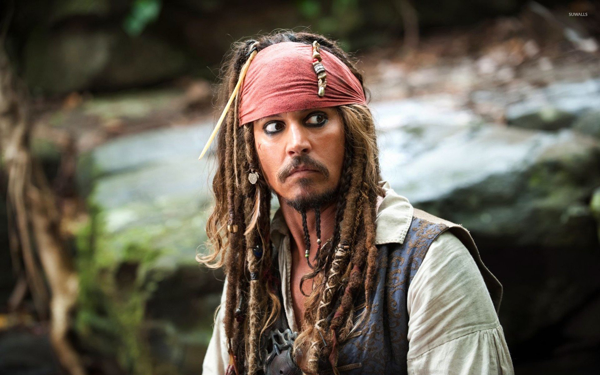
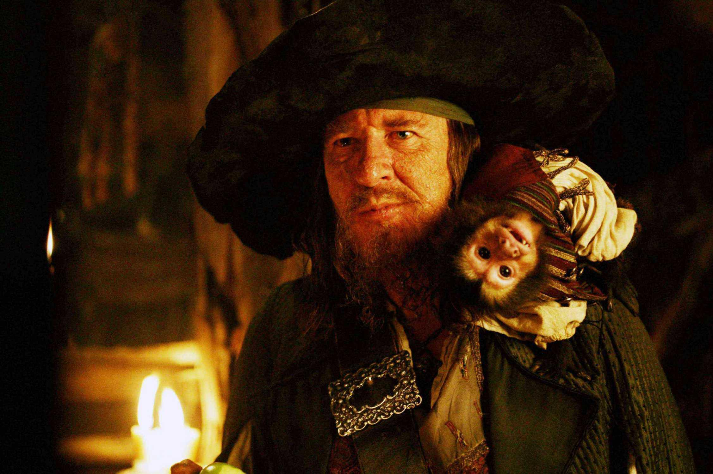
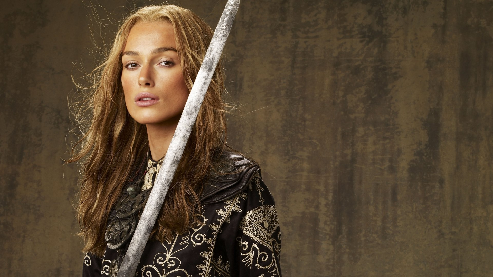
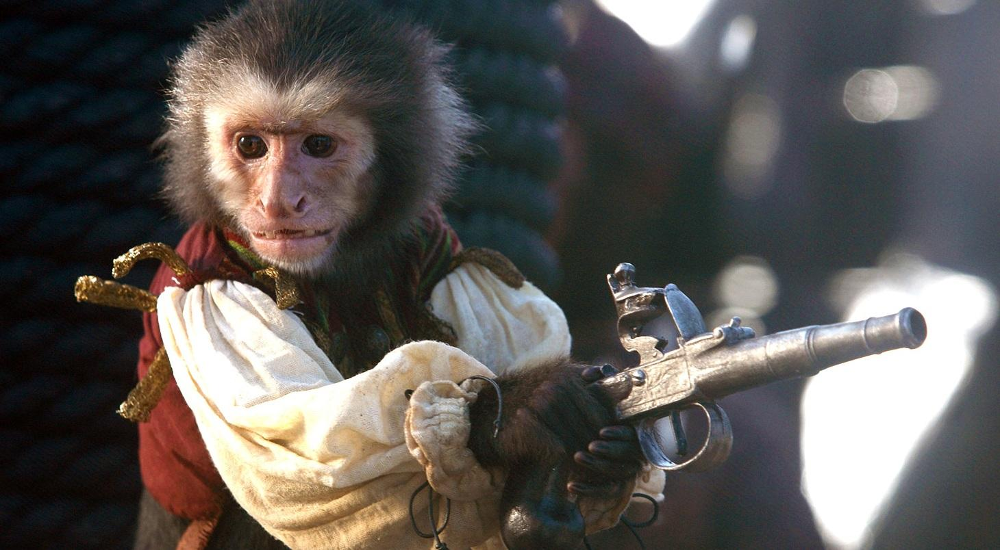
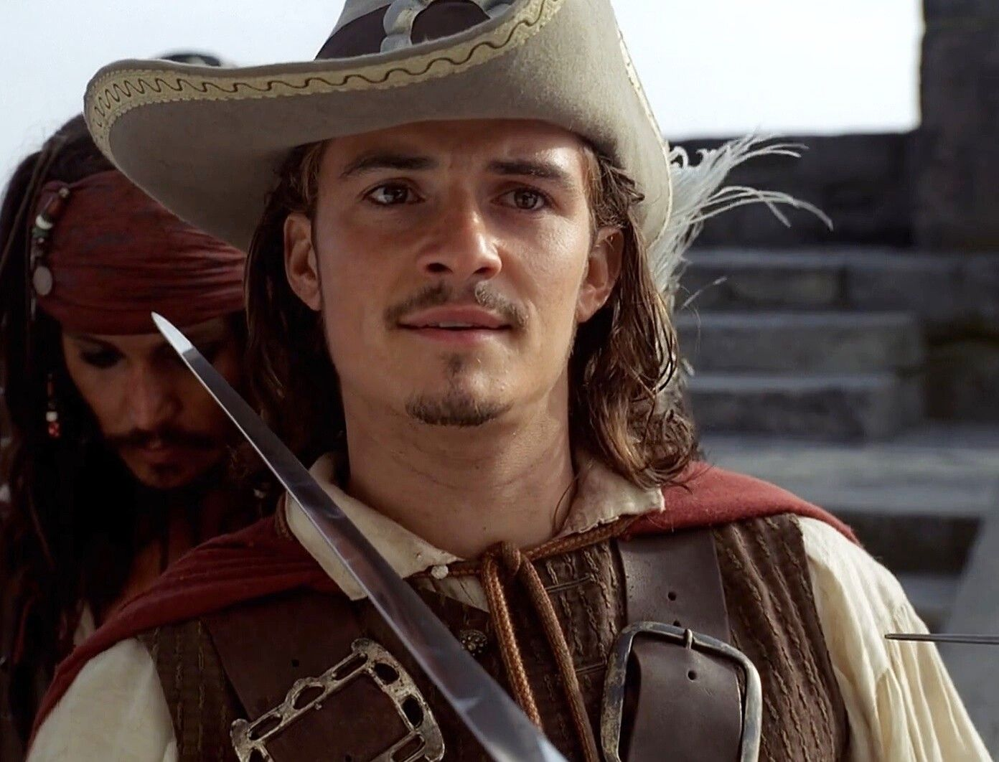

Mi favorito
Jack Sparrow.

Jack Sparrow es un personaje carismático, divertido y un poco
loco, capitán de la Perla negra y famoso por meterse en
problemas y salir de ellos con suerte. (En un principio no era
un personaje principal, consigiéndolo gracias al actor)
Capitán Barbosa

El capitán Barbosa empieza siendo un gran enemigo de Jack,
debido a que le quitó su barco, este tuvo una maldición en el
que sería un muerto viviente. Más adelante se convertirá en
parte de la tripulación de Jack.
Elisabeth Swann

Es hija del gobernador de Port Royal donde comienza todo, que
pasa de ser una noble a una pirata que vive muchísimas
aventuras.
Jack el mono

Jack es un monito compañero de Barbosa, el cual obtuvo ese
nombre a modo de burla dirigida hacia el capitán Jack Sparrow.
Will Turner

Will es un herrero, que llegó a Port Royal cuando era un niño,
era hijo de un supuesto "marinero" descubriendo que no es así,
ya que su padre realmente es un pirata convirtiendolo a él en lo
mismo y termina viviendo sus propias aventuras junto a Jack y
Elisabeth.
Davy Jones

Es el capitán del Holandés Errante, mitad hombre y mitad
criatura marina, controla al Kraken y guarda un cofre con su
corazón debido a un pacto con la diosa Calipso, su historia es
una historia de amor no correspondido y su aspecto y rabia hacía
los demás viene de esto.